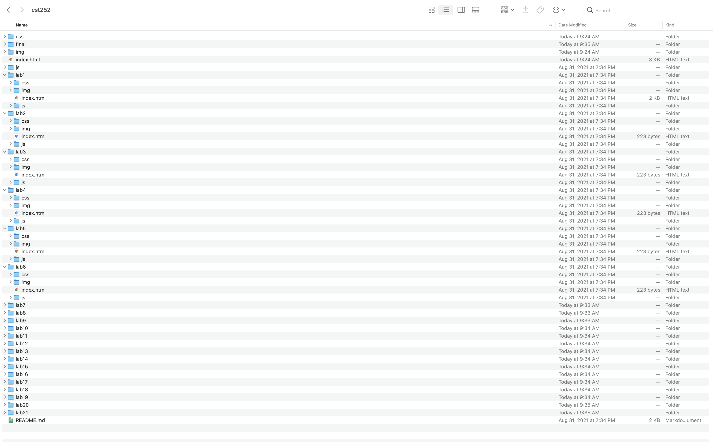
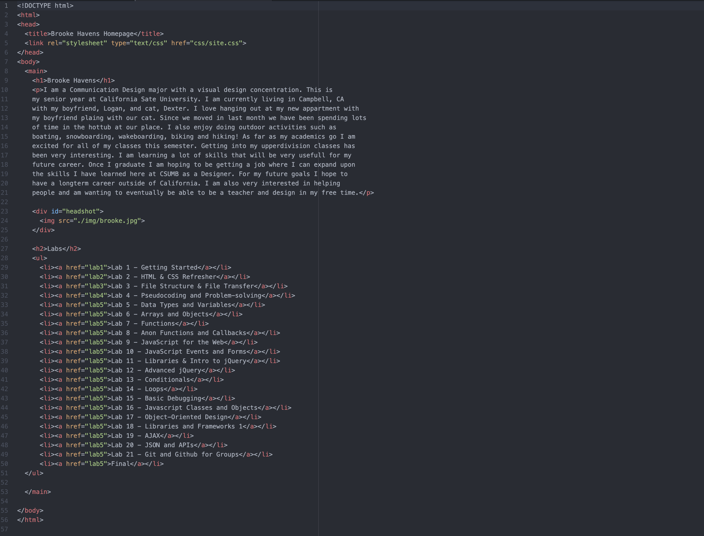
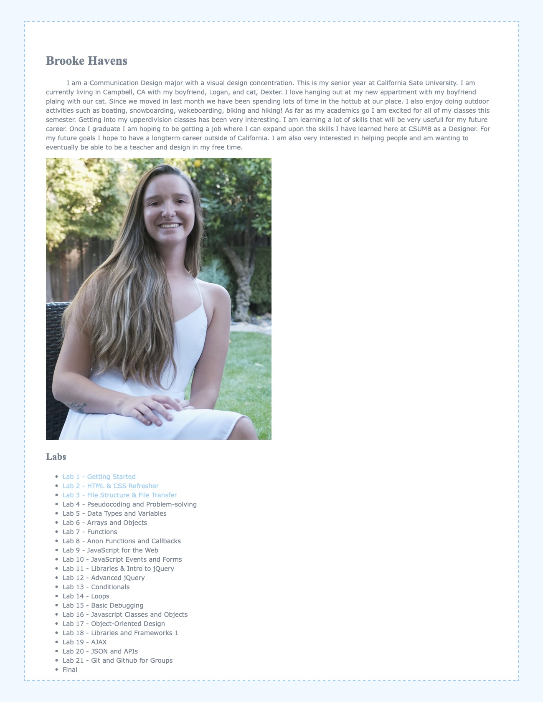

Lab 3 - File Structure and File Transfer
The purpose of this lab was to make sure all of our files are set up and easy to navigate
within the site. We were also meant to make the home page for our site visually pleasing
and understandable. The final step when completeting this lab was to review and set up
under our Lab 3 section.
Difficulties
Set one of this lab was rather easy. Duplicating and setting up the labs was something
that I remembered how to do. On the other hand this was difficult to try and set up
homepage to be visually pleasing. I am still in need of this type of refresher on how to
use css and html. Being able to use Wes' homepage and w3schools helpped alot with tis
task. Remembering the different ways to place things and what color options were within
css wsa very useful.
Results
I am mostly pleased with the way that I got my homepage set up. I am deffinetly happy
that I had remembered how to set up file structures and transfers so that I could
focus more on the visuals of the page. I think I should have alotted some more time
to set up my homepage since I knew how to replicate and set up the files.
Images


